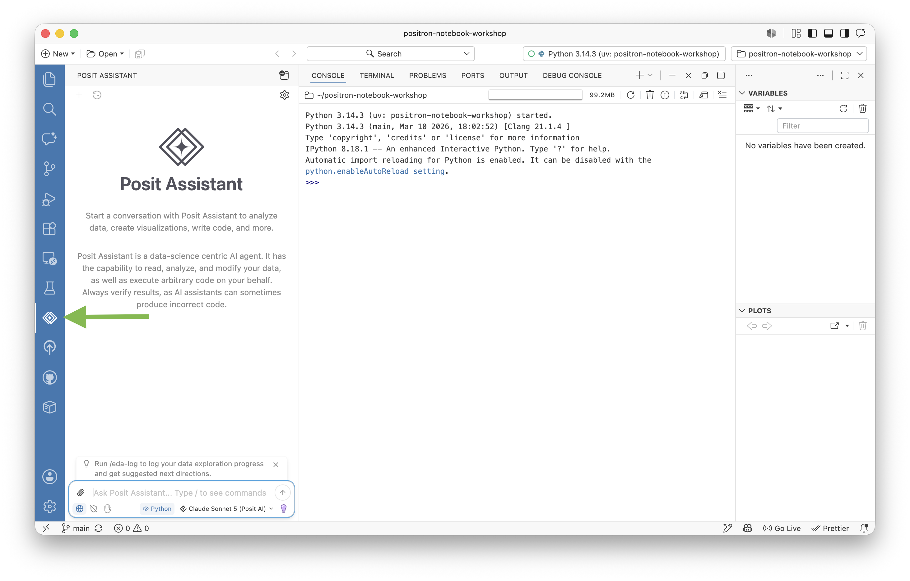
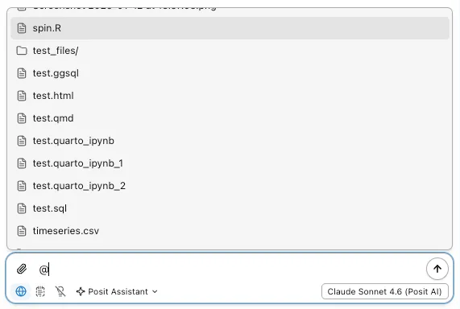
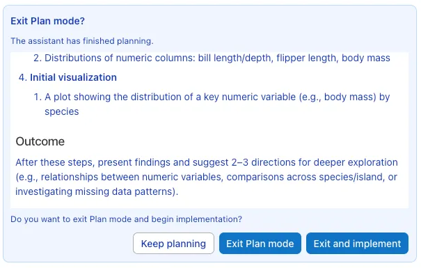
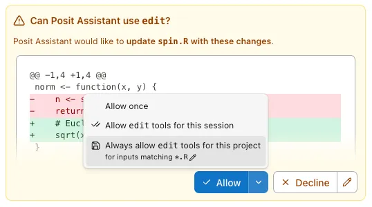

Structure of the active file, such as headings or functions
Jump to a report section
Timeline
History of the selected file, including Git commits and local saves when available
Compare an earlier version
Source Control
Changed and staged files in a Git repository
Review a diff and commit
Search
Matches across workspace files
Find every use of n_observed
Outline and Timeline are collapsed in this screenshot. Expand their headings. Choose Source Control or Search in the Activity Bar to switch sidebar views.
Find the four rows in Data Explorer and the three plotted points in Plots.
Find orientation.R in Explorer and its change in Source Control.
Data Explorer filters change the view. Save analytical filtering decisions in code.
Orientation checkpoint
Which program computes mean(demo$marker, na.rm = TRUE)?
Where would you look for a saved script? For an object in memory?
If you restart R, will the script still exist? Will demo still exist before you rerun the code?
Can you perform this exercise before connecting Copilot?
Scripts can use code cells
# %% Create and inspect (synthetic data)visit <-data.frame(arm =c("control", "control", "treated", "treated"),marker =c(4, 6, 5, 7))str(visit)# %% Summarizeaggregate(marker ~ arm, data = visit, FUN = mean)
Positron recognizes # %% cells in both R and Python scripts. Cells organize interactive execution but do not replace a reproducible top-to-bottom run.
AI-assisted coding
From a familiar conversation to help inside your R project
Choose the kind of help you need.
Meet the tools and connect an example provider.
Practice chat, inline completion, and agent work.
Check the code and its statistical meaning.
Start with a familiar chat conversation
If you have used ChatGPT to ask a question, start with that pattern:
Here is my R code. Why does it return NA? Explain how to fix it.
You supply context, read the answer, ask follow-up questions, and check it.
Inside a coding environment, two things can change:
Context: an assistant may read selected files or session information.
Actions: some workflows can insert code, edit files, or run commands.
Before using a tool, identify both what it can see and what it can do.
One R problem, three different needs
x <-c(4, 6, 8, NA)mean(x) # NA
What you need now
A suitable starting point
“I do not understand why this is NA.”
Chat: ask for an explanation
“I understand missing values. Help me finish the line.”
Inline: complete code at the cursor
“Update my saved script and add checks.”
Agent: delegate a bounded change
The task is similar. Your immediate goal determines the form of help.
Three forms of AI assistance
Form
How you interact
What changes?
1. Chat
Ask a question and discuss the answer
In read-only Ask mode, your files stay unchanged
2. Inline completion
Type code and inspect suggested text
Accepted text enters your source file
3. Agent / edit workflow
Request a change and review the work
The tool may edit files and run code
An agent often uses a chat box too. Check its mode and permissions to know whether it can act on your project.
The names you will see
Name
Role in today’s demonstration
Positron
The workspace containing your editor, Console, and panels
R
Runs the R code and calculates the result
GitHub Copilot
Our example AI service, including inline suggestions
Posit Assistant
The panel where we discuss code and request agent work
A provider supplies access to AI models. Posit Assistant can connect to different providers, including GitHub Copilot.
GitHub Copilot: our worked example
GitHub Copilot is GitHub’s AI coding assistant.
It can suggest code, answer questions, and help revise existing code.
It works in supported editors and other GitHub workflows.
In Positron, we will use its inline code suggestions.
Access requires a GitHub account with Copilot enabled.
Copilot is one example. Other AI tools may be used under the same course rules. No AI tool is required for the lab.
An AI chat interface inside Positron

Posit Assistant is Posit’s chat interface. It connects to a provider you select. GitHub Copilot is one available provider, with its own coding features.
Copy starter/ai-forms-demo.R to work/session09/ in your personal repository.
x <-c(4, 6, 8, NA)
Establish the answers yourself: 4 entries, 3 observed values, mean 6.
Chat: understand why mean(x) returns NA.
Inline: complete the observed-mean calculation.
Agent: add checks to the saved script and run it.
The screenshots show interface controls. The R prompts and reference answers are prepared course examples. You can follow them without an AI account.
Assistant modes: discuss, plan, or act
In Posit Assistant, choose the kind of work before sending the request.
Workflow
Purpose
What it may do
Ask (/ask)
Explain or inspect
Read context; cannot edit files or execute R/Python
Plan (/plan)
Develop an approach for review
Read context and write a plan; instructed to defer implementation
Regular agent work
Implement a requested change
Edit and execute, subject to permissions
Use /normal to leave Ask mode. After reviewing a plan, Exit and implement starts the work. A small, clear change can go directly to regular agent work.
1. Chat: when you need an explanation
Your question: “I do not understand this result.” Paste this code into chat:
x <-c(4, 6, 8, NA)mean(x)
Why does this return NA? Explain na.rm = TRUE. How many values contribute to the mean? Suggest one line of base R. Do not edit files.
Ask a follow-up question if an explanation is unclear. Then check the proposed line in R and compare it with ?mean.
Chat: where to ask and attach context

Open Posit Assistant.
Enter /ask for a read-only discussion.
Type @ and select work/session09/ai-forms-demo.R, or paste the small code example.
Ask a focused question and read the explanation.
The screenshot’s file names and selected model are documentation examples.
Check by hand: (4 + 6 + 8) / 3 = 6. Suggestions may differ.
Chat or inline? Choose by your next step
Situation
Choose
Why
“What does na.rm mean?”
Chat
You need an explanation and follow-up questions
“Use na.rm = TRUE; finish this assignment.”
Inline
You know the intended code and can judge a short completion
“The suggested line uses a function I do not know.”
Chat or R help
Understand the proposal before accepting it
You can switch forms during the same task. Accepting a line does not verify it.
3. Agent: when you want a file changed
An agent combines a language model with tools that can read files, edit code, and run commands, depending on its permissions.
In our example
What the agent may do
What you inspect
Understand
Read ai-forms-demo.R
Did it find the intended file?
Change
Add checks to the script
Does the diff match the request?
Execute
Run the script in R
Do the results support its claim?
Revise
Respond to a failed check
Did it fix the code or weaken the check?
An edit workflow may stop at proposed changes. An agent can continue through execution and revision. Features vary by tool.
Agent approvals: when will it ask you?
Ask / Plan describes the workflow. Approval settings control tool actions.
Approval setting
What happens
Normal
Routine actions may run; riskier actions prompt
Restricted
Each tool action requires confirmation
Auto
An automated reviewer allows or blocks actions
YOLO
Broad automatic approval, with some safeguards remaining
For our demonstration, use Normal and inspect each proposed change. Allow once approves one action; session/project approval covers future actions too.
Agent example: request one small change
Your goal is now a saved file change. Leave Ask mode with /normal. Enter /plan to practice reviewing an approach, then send:
In work/session09/ai-forms-demo.R, keep x unchanged and calculate its observed mean. Add base-R checks that x has four entries, three observed values, and a mean of 6. Change only this file. Show the plan first.
Review the plan, then choose Exit and implement and request a run. Planning is optional for a change this small.
The expected mean comes from our hand calculation.
No new package or data file is needed.
If the tool cannot run R, run the saved script in the R Console yourself.
Agent screenshot: review the plan

Read the proposed steps and expected output.
Keep planning lets you revise the approach.
Exit and implement starts work on the plan.
For our R task, the plan should name one file, the mean calculation, and the three checks.
Posit Plan mode screenshot. The pictured plan uses penguin data. Our exercise uses the four-value vector.
Agent screenshot: inspect a proposed edit

Check the file name and the red/green changes.
Allow once approves the displayed action.
Broader options allow more future edits without asking again.
Decline an unrelated change and explain what to revise.
Prompts depend on the tool’s permission settings. Review the final diff too.
Review Source Control: only the intended analysis file changed, and x still includes NA. Run from a fresh R session. Expect 6 and no failed assertions.
The expected values came from our calculation before the agent wrote the checks.
Checkpoint: choose the form and mode
You want to understand an unfamiliar function without changing files.
You know the plot you want and need help completing its labels.
You want a script revised, checked, and run.
You want to discuss the approach before that revision begins.
For each, name the form or mode and one thing you will verify.
From code assistance to statistical verification
We can now choose chat, inline completion, or agent work.
Next: can we tell when plausible code answers the wrong statistical question?
Our next example summarizes a measurement by treatment arm. The key issue is the denominator when values are missing.
Give statistical context in the source
# At week 4, report total n, observed n, mean marker,# and SD by randomized arm. Do not remove missing rows# before counting total n.
A precise comment improves the proposed code and remains useful documentation even when Copilot is disabled.
Vague instructions invite hidden choices
# Summarize marker by group.
Compare with:
# At week 4, retain all randomized participants and report# total n, observed n, mean, and SD by arm.
The second comment specifies population, time, denominator, statistics, and grouping.